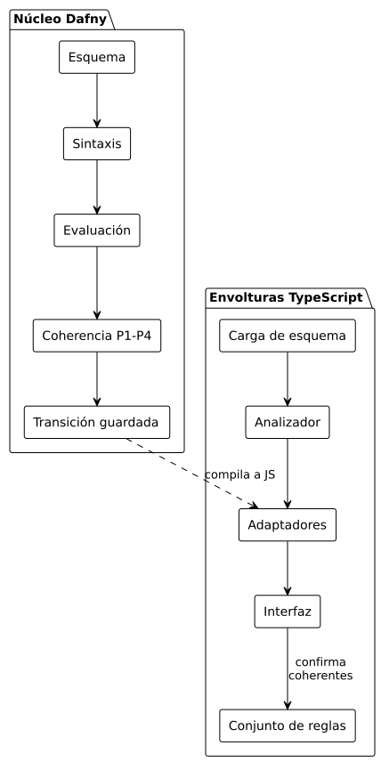
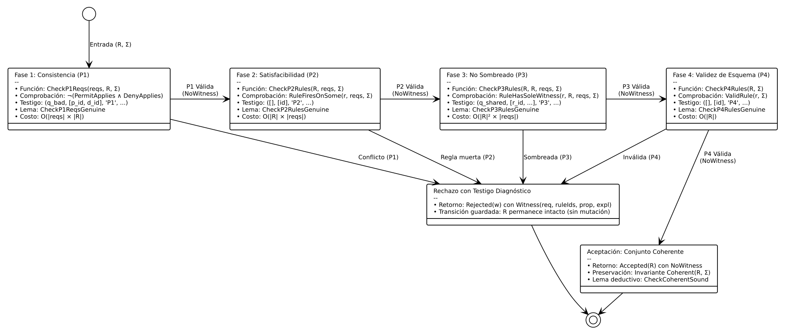
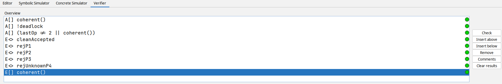
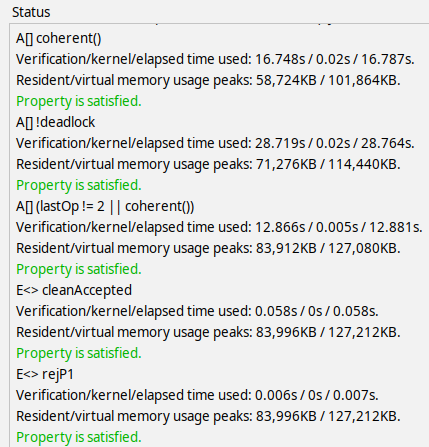

Facultad de Ingeniería de Producción y Servicios
Escuela Profesional de Ingeniería de Sistemas
FERIA DE PROYECTOS 2026
“Verificación formal de coherencia en políticas ABAC”
Docente asesor: Molina Barriga, Maribel
¿Qué es ABAC y por qué falla manualmente?
Modelo ABAC (NIST SP 800-162)
Solicitud concreta q (4 familias de atributos)
Sujeto:
role=medic, dept=er, clearance=3Recurso:
type=record, sensitivity=4Acción:
name=readEntorno:
hour=22, emergency=trueDirectivas (Permit / Deny where condición)
Permit where subject.role == medic && subject.clearance >= 4 && resource.sensitivity <= 3 && action.name == readDeny where action.name == write && resource.sensitivity >= 4 && subject.clearance <= 2Tres escenarios reales de falla manual
-
1. Emergencia vs turno nocturno (Contradicción): una guardia permite
environment.emergency == truemientras otra regla deniegaenvironment.hour >= 18; a las 22:00 en urgencias chocan. -
2. Umbrales imposibles (Regla muerta): editar
subject.clearance > 5 && subject.clearance < 2sobre el rango[1..5]crea una regla que jamás se activa. -
3. Directiva cubierta (Sombreado): agregar
role == medic && dept == cardiocuando ya existerole == medicvuelve nula la regla específica.
Problema central: en
schema-v1 existen 64 800 solicitudes posibles; el muestreo manual deja fallas ocultas hasta producción.
Propiedades formales de coherencia (P1–P4)
-
P1 — Consistencia: ∀ q ∈ AllRequests · ¬(PermitApplies(q) ∧ DenyApplies(q)).
Ninguna solicitud válida activa permiso y denegación simultáneamente (evita choques como emergencia vs horario). -
P2 — Satisfacibilidad: ∀ r ∈ R · ∃ q ∈ AllRequests · Applies(q, r).
Toda regla dispara sobre al menos una solicitud válida (descarta reglas muertas o rangos imposibles). -
P3 — No sombreado: ∀ r ∈ R · ∃ q ∈ AllRequests · (Applies(q, r) ∧ ∀ r' ≠ r, ¬Applies(q, r')).
Cada directiva decide por sí sola al menos una consulta (detecta coberturas y duplicadas exactas). -
P4 — Validez de esquema: ∀ r ∈ R · ValidRule(r, Σ).
Solo atributos declarados, operadores compatibles con el tipo y literales dentro de dominio.
Invariante de tesis:
Coherent(R) ≜ P1(R) ∧ P2(R) ∧ P3(R) ∧ P4(R) se preserva inductivamente en cada transición guardada.
Objetivos y alcance del proyecto
Objetivos formales
- Objetivo general: diseñar y verificar formalmente un verificador ABAC con preservación de coherencia por construcción en Dafny y validación de estados en UPPAAL.
- OE1 — Semántica y propiedades: formalizar la sintaxis ABAC, la evaluación determinista y las propiedades P1 a P4 sobre dominios finitos.
- OE2 — Invariante inductivo: demostrar preservación de
Coherent(R)enTryAdd,TryUpdateyTryRemovecon testigos mínimos auténticos. - OE3 — Model checking: comprobar en UPPAAL ausencia de bloqueos y 9 consultas TCTL sobre un caso concreto acotado.
Alcance y fragmento decidible
- Modelo ABAC cubierto: atributos
Enum,BoolyBoundedInten las 4 familias NIST SP 800-162 con conectivos booleanos contra literales. - Operaciones del núcleo: adición (
TryAdd), actualización (TryUpdate), baja (TryRemove), lotes atómicos y evaluación linealEvaluate. - Extracción sin SMT: compilación del núcleo verificado hacia JavaScript ejecutable con frontera ligera de análisis y validación de dominios.
- Delimitación por decidibilidad: esquemas discretos cerrados (sin PIP en vivo ni aritmética abierta) y cotas de protección configurables (
TooLarge).
Comparativa con trabajo previo
| Enfoque | Paradigma formal | SMT en ejecución | Guarda inductiva | Testigo | Ejecución |
|---|---|---|---|---|---|
| XACML (Turkmen) | Traducción SMT | Requerido (Z3) | No | Modelo SMT | Servicio externo |
| ABAC (Liu et al.) | Partición y grafos | No | No | Par de reglas | Algoritmo local |
| AWS Zelkova / BPA | Reducción SMT | Requerido (Z3) | No | Contramodelo SMT | Nube AWS |
| Cedar (Cutler) | Verificación (Lean) | Opcional | No | Diagnóstico sintáctico | Binario Rust / WASM |
| Mohawk / ARBAC | SMT / Reachability | Requerido | No (a posteriori) | Traza de transición | Herramienta CLI |
| Verificador propuesto | CbC (Dafny + UPPAAL) | Ninguno | Sí (AddPreserves) | Tupla (req, rᵢ, rⱼ) | JS compilado desde Dafny |
Metodología CbC y herramientas formales
Metodología CbC en 5 fases
- Fase 1 — Modelado formal: sintaxis abstracta, semántica denotacional y enumeración
AllRequestsen Dafny. - Fase 2 — Prueba deductiva: propiedades P1–P4, teoremas de preservación/solidez/completitud y
BoundedCheck. - Fase 3 — Model checking: autómata finito
Adminsobre caso fijo y 9 consultas TCTL en UPPAAL. - Fase 4 — Extracción ejecutable: compilación directa Dafny → JS detrás de una frontera mínima de entrada.
- Fase 5 — Evaluación guiada: trazado paso a paso de casos clínicos y conformidad en frontera.
Herramientas formales y estándares
- Dafny 4.11: especificación matemática, prueba de 114 obligaciones (59 lemas) y síntesis a JS.
- Z3 (4.12+) y cvc5 (1.0+): solucionadores SMT usados únicamente en tiempo de diseño.
- UPPAAL 5.0: exploración exhaustiva de estados y verificación de 9 propiedades TCTL.
- Estándares ABAC: NIST SP 800-162, NIST SP 800-192 y referencia OASIS XACML 3.0.
- Frontera anfitriona (TS / Node / Bun): análisis sintáctico de entrada y ejecución del núcleo extraído.
Arquitectura y frontera de ejecución

-
1. Núcleo formal (Dafny): los 5 módulos operacionales (
Schema,Syntax,Eval,Coherence,Transition) compilan a JS;BoundedCheckqueda como verificación finita en tiempo de prueba. -
2. Frontera mínima de entrada: valida el esquema, desazucara
in/betweeny formatea testigos (explain). No reimplementa ninguna decisión lógica. - 3. Ejecución sin SMT externo: toda evaluación y guarda en producción ejecuta directamente el código extraído desde las pruebas en Dafny.
Fases de verificación (P1 a P4)

Orden determinista en
CheckCoherent: evalúa secuencialmente P1 → P2 → P3 → P4 y retorna el primer testigo mínimo; parseRule y TryUpdate aseguran validez P4.
Verificación deductiva en Dafny
Transition.dfy — Guarda e invariante inductivo
function TryAdd(R: Ruleset, r: Rule, schema: Schema): AddResult {
var w := CheckCoherent(R + [r], schema);
if w.NoWitness? then Accepted(R + [r])
else Rejected(w.wit)
}
lemma AddPreserves(R: Ruleset, r: Rule, schema: Schema)
ensures match TryAdd(R, r, schema)
case Accepted(rs) => Coherent(rs, schema)
case Rejected(_) => true
{
var w := CheckCoherent(R + [r], schema);
if w == NoWitness {
CheckCoherentSound(R + [r], schema);
}
}114 obligaciones verificadas (0 errores)
- Invariante de estado:
EmptyCoherent(caso base) yAddPreserves/UpdatePreservesaseguranCoherent(R)en toda aceptación. - Monotonía ante bajas:
RemovePreservesCoherentdemuestra que retirar una regla nunca rompe P1–P4. - Ausencia de conflicto:
EvaluateAgreesOnCoherentprueba queDecision.Conflictes inalcanzable vía interfaz guardada. - Testigos auténticos:
WitnessSoundnessyWitnessCompletenessligan rechazo y violación real. - Comprobación finita:
BoundedCheck.dfyverifica exhaustivamente 259 conjuntos (hasta longitud 3).
Model checking en UPPAAL: modelo y caso fijo

Exploración exhaustiva: 23 nodos estables · 470 evaluaciones · 529 transiciones · 0 bloqueos
Validación de caso concreto en Admin
- Propósito: complementar los lemas de Dafny validando exhaustivamente el protocolo dinámico sobre una instancia fija y concreta (autómata discreto sin relojes ni canales).
- Microuniverso (NREQ = 16): 2 roles × 2 acciones × 2 horas
{8, 18}× 2 emergencias (máx. 3 reglas activas). - Repertorio fijo (r0..r9):
r0..r2codifican la política limpia;r3yr7+r8fuerzan choques P1;r6prueba regla muerta P2;r4..r5sombreado P3;r9invalidez P4. - Estados comprometidos (
Trying*): evalúancoherentC()y confirman o rechazan atómicamente sin alterarcommitted.
Model checking en UPPAAL: 9 consultas TCTL
| Consulta TCTL | Clase | Qué valida y por qué es necesaria |
|---|---|---|
A[] coherent() |
Seguridad | Todo estado alcanzable (incluidos Trying*) mantiene committed coherente; impide mutación parcial. |
A[] !deadlock |
Seguridad | Las guardas complementarias y transiciones de frontera aseguran que el autómata jamás queda atrapado. |
A[] (lastOp != 2 || coherent()) |
Seguridad | Aísla la operación doRemoveC para probar en el modelo que retirar reglas sin re-chequear preserva coherencia. |
E<> cleanAccepted |
Alcance | Prueba de no vacuidad: valida que el caso fijo limpio {r0, r1, r2} sí es alcanzable y aceptado. |
E<> rejP1 |
Alcance | Confirma detección de contradicción P1 frente a pares incompatibles (r0/r3 y r7/r8). |
E<> rejP2 |
Alcance | Confirma detección de regla insatisfacible P2 cuando se propone r6 (cl > 5 && cl < 2). |
E<> rejP3 |
Alcance | Confirma detección de sombreado P3 cuando r4 o r5 cubren a r0 pasando P1 y P2. |
E<> rejUnknownP4 |
Alcance | Verifica que actualizar un identificador inexistente dispara rechazo P4 en Empty y Coherent. |
E[] coherent() |
Alcance | Asegura la existencia de una traza infinita siempre coherente de evolución continua. |


9 / 9 propiedades satisfechas (16.7 s en
A[] coherent(), 28.7 s en A[] !deadlock)
Evaluación guiada (I): conflicto y corrección
Caso 1: Conflicto en emergencia (
emergency-override.json)1. Estado inicial R₀ = []: coherente por
EmptyCoherent.2. TryAdd(R₀, r₁):
Supera P1–P4 (dispara en índice 0 de
Permit where environment.emergency == true.Supera P1–P4 (dispara en índice 0 de
AllRequests) → Accepted([r₁]), id=1.3. TryAdd(R₁, r₂):
Deny where environment.hour >= 18.CheckP1From recorre AllRequests hasta hallar la primera solicitud con hour=18 y emergency=true:(medic, cardio, 1, record, 1, read, 18, true) donde disparan r₁ y r₂.4. Veredicto: Rejected(P1, [1, 2]). Por
AddPreserves, R₁ queda inalterado.Caso 2: Remediación coherente (
clean.json) y Evaluate1. r₁':
Permit where subject.role == medic && action.name == read → Accepted([1]).2. r₂':
Deny where action.name == write && resource.sensitivity >= 4 && subject.clearance <= 2 → acción disjunta (write vs read) → Accepted([1, 2]).3. r₃':
Coincide con
Permit where environment.emergency == true && action.name == read.Coincide con
r₁' solo en Permit (P1 OK) y decide en solitario urgencias de nurse/admin (P3 OK) → Accepted([1, 2, 3]).4. Evaluate:
(nurse, er, 5, record, 1, read, 3, true) → Permit (regla #3), sin Conflict posible.Evaluación guiada (II): P2–P4 y síntesis formal
Trazas guiadas de anomalías P2, P3 y P4
• P2 —
P1 pasa (sin
unsatisfiable.json: Permit where subject.clearance > 5 && subject.clearance < 2.P1 pasa (sin
Deny); RuleFiresOnSome agota [1..5] en las 64 800 solicitudes con 0 disparos → Rejected(P2, [1]).
• P3 —
P1 y P2 pasan, pero
shadowed.json: r₁: Permit where subject.role == medic (aceptada) → TryAdd(r₂: role == medic && dept == cardio).P1 y P2 pasan, pero
RuleHasSoleWitness detecta que r₁ siempre dispara junto a r₂ → Rejected(P3, [2, 1]) en medic/cardio.
• P4 — Esquema / ID ausente:
TryUpdate(R, 99, r) rechaza directamente con Witness([], [99], "P4") sin mutar R; parseRule rechaza literales fuera de rango.
Síntesis de garantías formales
- Autoridad en Dafny:
114obligaciones verificadas (0errores),7teoremas centrales de preservación/solidez/completitud y259conjuntos enBoundedCheck. - Autoridad en UPPAAL:
23nodos estables,529transiciones,9/9consultas TCTL satisfechas,0bloqueos. - Complejidad decidible: P1/P2 en
O(|AllRequests| · |R|), P3 enO(|AllRequests| · |R|²)yEvaluateenO(|R|). - Conformidad en frontera: las pruebas de replay sobre los 5 fixtures confirman que el JS compilado reproduce los testigos formales (sin sustituir la prueba matemática).
Gracias…
- “Debemos construir software que sea correcto por construcción, y no software cuyo comportamiento sea incierto hasta después de la entrega.” — Anthony Hall y Roderick Chapman
- Repositorio: https://github.com/microuni-unsa/afve-teo-turno-c-grupo-1-final